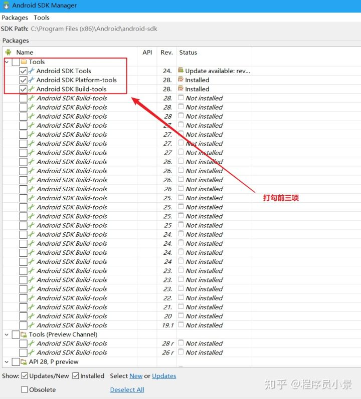
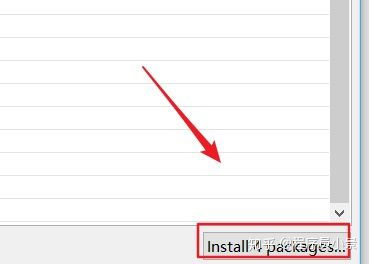
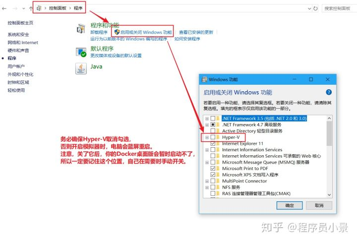
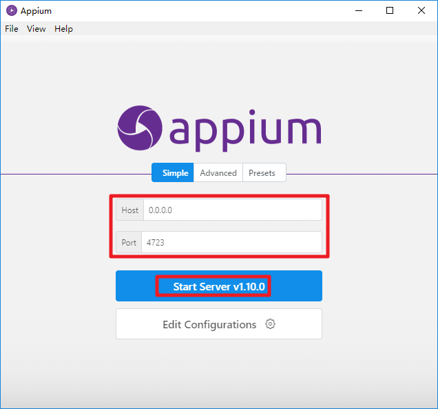
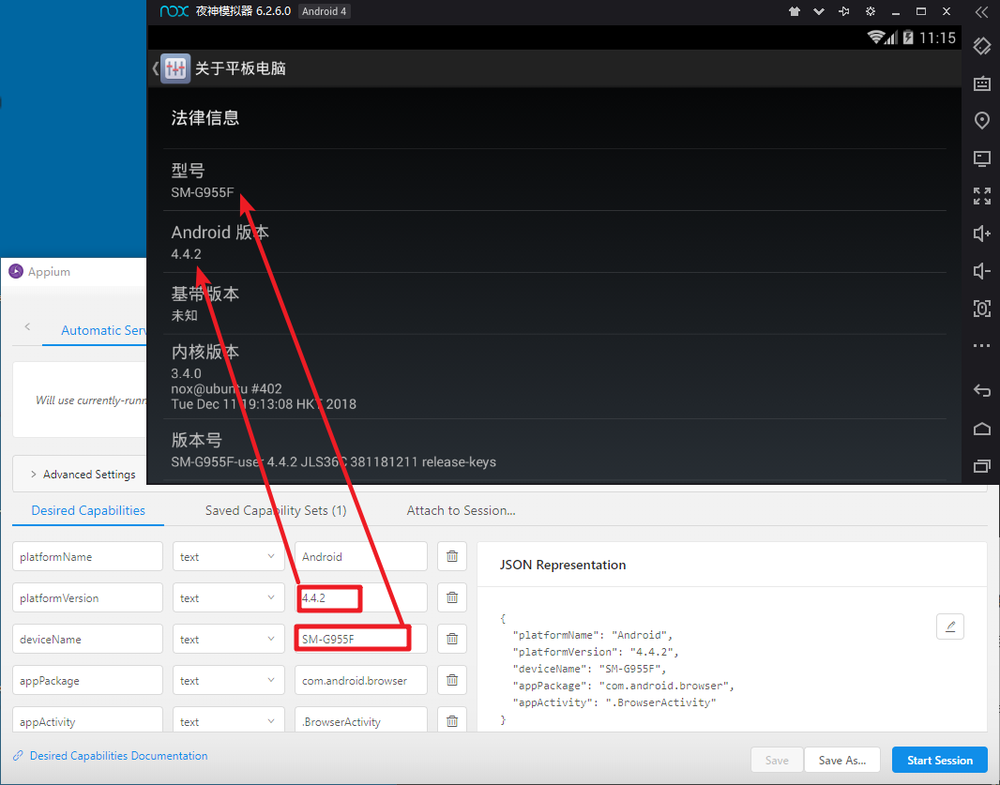

appium环境安装
学习目标
- 了解 appium环境的搭建
appium是移动端app自动化测试工具，可以用来控制APP，也能帮助我们爬虫获取数据
1 环境安装
以win10为例
1.1 安装node.js
- 点击进入 https://nodejs.org/zh-cn/
- 点击下载安装包

- 双击安装包，然后同样一路狂点下一步
- 安装完成后在cmd终端中输入
node -v，显示版本号则表示安装成功
1.2 安装java JDK
- 点击进入官网下载页面 https://www.oracle.com/technetwork/java/javase/downloads/jdk8-downloads-2133151.html
- 注意下载位置，点击同意协议，下载相应的版本

- 双击安装包，然后同样一路狂点下一步

！！！注意安装位置，默认是C:\Program Files\Java，尽量不要修改。
添加环境变量
CLASSPATH
.;%JAVA_HOME%\lib\dt.jar;%JAVA_HOME%\lib\tools.jar;注意上边最开始有个点
JAVA_HOME
C:\Program Files\Java\jdk1.8.0_191Path
%JAVA_HOME%\bin%JAVA_HOME%\jre\bin
在cmd终端中输入java和javac不报异常，说明安装成功


1.3 安装android SDK
- 进入网站 https://www.androiddevtools.cn/
- 依次点击AndroidSDK工具>>SDK Tools>>会跳转到以下界面，Windows建议选择.exe后缀

- 下载后安装

注意此处，点击第一项，为所有用户安装



如果不小心关闭了，或者没有自动打开上边的界面，点击安装目录下的SDK Mansger.exe文件，同样可以打开,已经自动打开的忽略此步。




下载完成后，你的sdk文件夹下，应该是这样的

安装环境变量
ANDROID_HOME
C:\...\Android\android-sdkPath
%ANDROID_HOME%\tools%ANDROID_HOME%\platform-tools


1.4 安装Appium
- 需要科学上网 http://appium.io/
- 点击下载并安装


1.5 安装夜神模拟器
- 下载并安装夜神模拟器 https://www.yeshen.com/
- 首先，下载完成后不要忙着打开夜神模拟器，先确保你的电脑Hyper-V是关闭的，否则启动模拟器时部分电脑会蓝屏重启。

- 把安卓sdk中的adb.exe复制两份，其中一个改名为nox_adb.exe后，放到夜神模拟器安装目录的bin目录下覆盖原文件


2 联调测试环境
2.1 开启并设置夜神安卓模拟器


2.2 adb命令建立连接
在夜神模拟器安装路径下的bin目录下执行cmd进入终端
输入
adb devices后，出现提示List of devices attached * daemon not running; starting now at tcp:5037 * daemon started successfully再输入
nox_adb.exe connect 127.0.0.1:62001后，出现提示connected to 127.0.0.1:62001最后再次输入
adb devices后，出现提示List of devices attached 127.0.0.1:62001 device

2.3 开启Appium并配置运行
获取app包名和进程名
打开夜神模拟器中的浏览器
在adb连接正确的情况下，在夜神模拟器安装目录的bin目录下的cmd中输入
adb shell- 进入adb shell后输入
dumpsys activity | grep mFocusedActivity com.android.browser就是app包名.BrowserActivity就是进程名

- 启动Appium，点击start server

- 点击放大镜进入并输入测试配置


配置参数的来源
- platformName 系统名
Android - platformVersion 系统版本
4.4.2 deviceName 手机型号
SM-G955FappPackage app的包名
com.android.browser- appActivity app的进程名
.BrowserActivity
- platformName 系统名

- 关闭夜神模拟器中的浏览器，点击右下角的start session查看运行结果
2.4 干的漂亮！环境搭建成功

知识点：了解 appium环境的搭建
小结
- 了解 appium环境的搭建